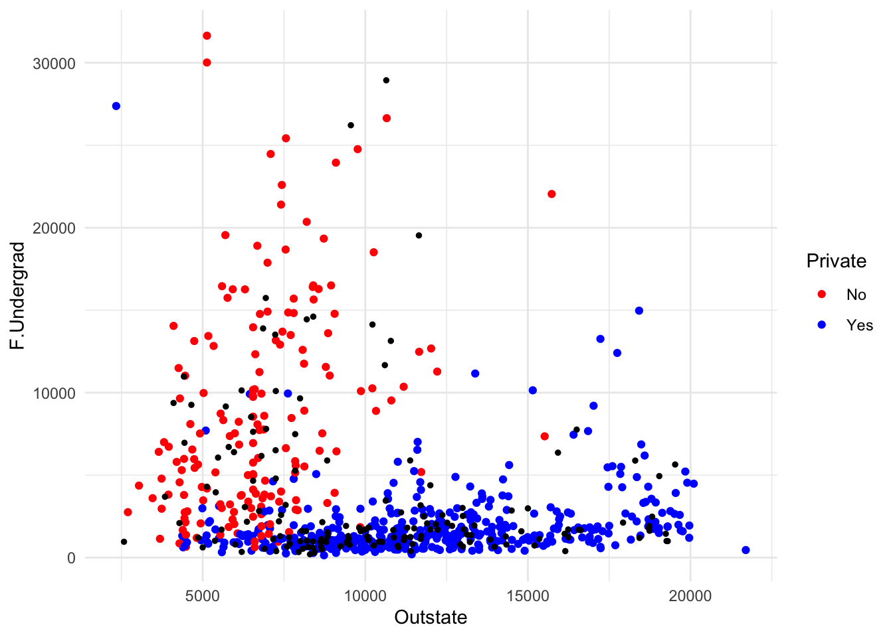

library(ISLR)
data(College)
college_data <- CollegeSection 2 - KNN and Linear Regression
Notes
Note that the material in these notes draws on past TF’s notes (Ibou Dieye, Laura Morris, Emily Mower, Amy Wickett), and the more thorough treatment of these topics in Introduction to Statistical Learning by Gareth James, Daniela Witten, Trevor Hastie and Robert Tibshirani.
Important Machine Learning Concepts
Regression vs Classification
Prediction problems can be defined based on the characteristics of the outcome variable we want to predict.
Regression problems are those where the outcome is quantitative
Classification problems are those where the outcome is qualitative / categorical
Sometimes the same methods can be used for regression and classification problems, but many methods are useful for only one of the two problem types.
Bias-Variance Trade-off
The variance of a statistical learning method is the amount by which the prediction function would change if it was estimated on a different training set. A model that overfits has high variance, whereas a model that underfits has low variance.
To remember the difference between low variance and high variance models, I find it helpful to think of examples. Suppose your model was ``use the mean of the training data as the predicted value for all new data points.’’ The mean shouldn’t change much across training sets, so this has low variance. On the other hand, a model that picked up super complex patterns is likely to be picking up noise in addition to signal. The noise will vary by training set, so such a method would have high variance.
The bias of a statistical learning method is the error produced by representing a real world problem by a statistical learning method. Very flexible models (which are prone to overfitting) can capture complex patterns and so tend to have low bias. Very simple models (which are prone to underfitting) are limited in their ability to pick up patterns and so may have high bias.
The book uses the example of representing a non-linear function by a linear one to show that no matter how much data you have, a linear model will not do a great prediction job when the process generating the data is non-linear. Bias also applies to methods that might not fit your traditional concept of a statistical function. In the K-Nearest Neighbors section, we will discuss bias in that setting.
Often, we will talk about the bias-variance trade-off. In an ideal world, we would find a model that has low variance and low bias, because that would yield a good and consistent model. In practice, you usually have to allow bias to increase in order to decrease variance and vice versa. However, there are many models that will decrease one (bias or variance) significantly while only increasing the other a little.
Supervised v. Unsupervised Learning
Supervised learning refers to problems where there is a known outcome. In these problems, you can train a model to take features and predict the known outcome.
Unsupervised learning refers to problems where you are interested in uncovering patterns and do not have a target outcome in mind.
An example of supervised learning would be using students’ high school grades, class enrollments, and demographic variables to predict whether or not they attend college.
An example of unsupervised learning would be using the same grades, enrollment, and demographic features to identify ``types’’ of high school students. That is, students who look similar according to these features. Perhaps you are interested in this because you want to make classes that contain a mix of different types of students. Often, unsupervised learning is useful for creating features for supervised learning problems, but sometimes uncovering patterns is the final objective.
Measuring Model Performance
There are different functions you can use to measure model performance, and which function you choose depends on your data and your objective. These functions are called ``loss functions,’’ which is a somewhat intuitive name when you think about the fact that your machine learning algorithm is trying to minimize this function and thus minimize your loss.
To understand how and why loss functions depend on your data and objectives, examples can be helpful.
Consider first that you are trying to predict the future college majors of this year’s incoming freshmen (a classification problem). In this case, your prediction will either be right (you predict the major they end up choosing) or it will be wrong. Therefore, you might use accuracy (% correct) to measure model performance.
What if, though, you cared more about being wrong for some majors than others? For example, imagine that all biology majors are going to need personalized lab equipment in their junior year and that the lab equipment is really expensive if ordered last minute but a lot cheaper if ordered a year or more in advance? Then, you might want to give more weight to people who end up being biology majors so that your model does better for predicting biology majors than other majors.
Now consider that you are trying to predict home prices (a regression problem). You might measure your performance using mean-squared error (MSE), which is found by taking the difference between the predicted sale price for each home and the true sale price (the error), squaring it for each home, and then taking the mean of these squared errors. However, home prices are skewed (e.g. some homes are extremely expensive compared to most homes on the market). This means that a 5% error on a $3 million home is a lot bigger than a 5% error on a $100,000 home. When you square the errors (as you do when calculating MSE), the difference becomes enormous.
But since both errors are 5%, maybe you want to penalize them the same. One option is to use Mean Percentage Error (MPE), but this has the weird effect that if you over-predict one home by 5% and under-predict the other by 5%, your MPE is zero. Therefore, a popular option is to use the Mean Absolute Percentage Error (MAPE), which is the mean of the absolute values of the percentage errors and thus would be 5% in this example.
For many prediction problems in the policy sphere, we may not only care about accuracy of prediction but also about fairness or other objectives. The loss function is a place where we can explicitly tell the model to optimize for these concerns in addition to predictive performance.
K-Nearest Neighbors
Concept
The idea underlying K-Nearest Neighbors (KNN) is that we expect observations with similar features to have similar outcomes. KNN makes no other assumptions about functional form, so it is quite flexible.
Method
KNN can be used for either regression or classification, though it works slightly differently depending on what setting we are in. In the classification setting, the prediction is a majority vote of the observation’s \(K\)-nearest neighbors. In the regression setting, the prediction is the average outcome of the observation’s \(K\)-nearest neighbors.
For KNN, bias will be lower when \(K\) is lower. Bias will increase quickly as k increases, with further away neighbors being included in the prediction.
The only choice we have to make when implementing KNN is the value of \(K\) (e.g. how many neighbors should we use in our prediction?). A good way to find \(K\) is through cross-validation, something we will cover a little later, but which broadly involves training the algorithm on one set of data and seeing how well it does on a different set.
Implementation and Considerations
A concern with KNN is whether you have good coverage of your feature space. Imagine that all of your training points were in one region of the feature space, but some of your test points are far away from this region. You will still use the \(K\) nearest neighbors to predict the outcome for these far-away test points, but it might not work as well as if the points were close together. Therefore, when implementing KNN, it’s good to think about how similar the features in your test set will be to the features in your training set. If they differ systematically, that is a concern (as it would be for other ML methods as well).
Another important consideration is whether there is an imbalance in the frequency of one outcome compared to another. For example, suppose we are trying to classify points as true'' orfalse’’ and most points are true.'' Even if thefalse’’ outcomes are clustered together in the feature space, if we use a large enough value of \(K\), we will predict true'' for these observations simply because there are many moretrue’’ observations than ``false’’ observations. Therefore, we would do better to use a small value for \(K\) in this setting.
Another consideration is whether proximity in each variable is equally important or if proximity in one variable is more important than proximity in another variable. KNN will normalize variables so that they are all on the same scale (same mean and variance) and then treat distance in all normalized variables the same. If you want to up-weight proximity for some variables and down-weight it for others, you can change the way each variable is normalized to accomplish this. Alternatively, you can include only those variables you think are important. When you have this type of uncertainty, there are more principled ways of selecting variables that will be discussed later in the course.
Extensions
You might think that neighbors that are really close should be weighted more than neighbors that are a bit further away. Many people agree, so there are methods to allow you to weight different observations differently. You might also think that you shouldn’t use just the \(K\) nearest neighbors, but all the neighbors within a certain distance. Or maybe you think there’s information available in all observations, but there’s more information in closer neighbors. All of these adjustments fall under the umbrella of kernel regression. In fact, KNN is a special case of kernel regression. Broadly defined, kernel regression methods are a class of methods that generate predictions by taking weighted averages of observations. Because these methods (KNN included) do not specify a functional form, they are called ``non-parametric regression’’ methods.
Linear Regression
Concept
Linear regression is a parametric model that is additive and linear in the provided features. It is a classic technique used in many fields, and its widespread popularity greatly pre-dates the popularity of machine learning. Its general form is
\[\begin{equation} \hat{y} = \hat{\beta}X \end{equation}\]
Where \(\hat{y}\) is a vector of predicted \(y\) values and \(X\) is a matrix whose rows correspond to observations and whose columns correspond to features.
When there is only one feature on the right hand side, the model is called a simple linear regression." When there are multiple features on the right hand side, the model is calledmultiple linear regression.”
When used for inference, we are interested in \(\hat{\beta}\). However, when used for prediction, we are only interested in \(\hat{y}\), and we cannot say that the \(\hat{\beta}\)s reflect any sort of causal relationship between the features and the outcome. For more information on how to test the significance of regression coefficients, please see Chapter 3 of ISLR for a reference on \(t\)-tests (in the simple model) and \(F\)-tests (in the multivariate model).
Method
To find the coefficients \(\hat{\beta}\) in a linear regression, we find the value of \(\hat{\beta}\) that minimizes the residual sum of squares (RSS) in the training data. The classic formula for \(\hat{\beta}\) uses matrix algebra and is \[\begin{equation} \hat{\beta} = (X^\prime X)^{-1}X^\prime y \end{equation}\] We will estimate \(\hat{\beta}\) using statistical software.
It is worth noting that the traditional measure of fit for linear regression is \(R^2\), but \(R^2\) mechanically increases with the inclusion of additional features. Therefore, in the prediction setting, the \(R^2\) on the training data is less important than the mean squared error (MSE) on the test data.
Implementation and Considerations
There are a few things to watch out for as far as the features that you feed into a linear regression.
There must be fewer features than observations. Later in the semester, we will cover penalized regression methods that do variable selection to yield estimable linear models, even when the number of available features exceeds the number of observations. Common penalized regression methods are lasso and ridge regression.
You can use quantitative or qualitative features for the \(X\)s. When using qualitative features, generate indicator variables for all but one category. The omitted category will serve as the ``baseline,’’ meaning that the coefficients on the included categories can be thought of as the differential effect of being in that category compared to the baseline (omitted) one.
The reason you omit one category when making indicator variables is to avoid linear dependence. If all categories were represented, the indicator columns would all sum to 1, which would mean they were linearly dependent. More generally, you cannot have collinearity or multi-collinearity, which means you cannot have features that are (close to) perfectly correlated.
You can interact two features (e.g. create a feature that is the product of two other features), and such interactions are valid on categorical and continuous features. However, when you include an interaction, you should also include each of the features on their own as well. Interactions have intuitive appeal if you think there are synergies between two features in terms of their effect on \(y\).
You can exponentiate features and include the exponentiated features in your model. The resulting model is sometimes called polynomial regression and is appropriate when there appears to be a non-linear relationship between a feature and the outcome.
Check for influential points – those that are both outliers (they have an unusual or extreme \(y\) value) and high leverage (they have an unusual or extreme \(x\)), as these points can greatly influence the model fit. You may want to exclude them or at least check your model’s sensitivity to including them versus excluding them.
If you are interested in inference (e.g. looking at the \(\hat{\beta}\)s to understand a causal relationship), it is important to be aware of Omitted Variables Bias (OVB). OVB occurs when you have two correlated features that each have an effect on \(y\) but only one is included in the regression. In that case, the coefficient on the included feature is biased, because it is partially picking up the true effect of the feature on the outcome and is also partially picking up the effect of the omitted feature on the outcome (since the omitted feature is correlated with the included feature).
As an example of OVB, suppose \(X_1\) and \(X_2\) are positively (but not perfectly) correlated. If they are also both positively correlated with \(y\), then when \(X_2\) is omitted from the regression, the coefficient on \(X_1\) will be higher than when both \(X_1\) and \(X_2\) are included. This is because the coefficient on \(X_1\) will now pick up both the effect of \(X_1\) on \(y\) and part of the effect of \(X_2\) on \(y\) (since \(X_1\) is a proxy for \(X_2\) because the two features are positively correlated).
When implementing linear regression, you should also take a look at your residuals and make sure there are no red flags:
When you plot residuals, they should appear randomly scattered. Any non-linearity or patterns in the residuals suggest your model is not appropriate.
Linear regression assumes residuals are uncorrelated. Evidence of correlated residuals indicates a problem with your model or your data that should be investigated.
Residuals should have constant variance. If you plot your residuals and their variance seems to be a function of \(x\), then the errors are heteroskedastic (a fancy word for ``a function of \(x\)’’). In this case, traditional statistical measures of significance are invalid, but other valid methods are available.
Comparison to KNN
The main difference of note between linear regression and KNN is that linear regression is a parametric model whereas KNN is a non-parametric model. There are a few general differences between parametric and non-parametric models that are worth noting
Non-parametric models are more flexible whereas parametric models impose stronger assumptions
When there is a small number of observations per feature, parametric models tend to outperform non-parametric models
In addition to the general differences between parametric and non-parametric models, a key difference between KNN and linear regression is that linear regression is quite simple to fit. In fact, it only requires estimation of a few \(\beta\)s, whereas KNN is much more computationally intensive. Because of this simplicity, linear regression is also more interpretable than KNN.
Coding Section
There are lots of great datasets available as part of R packages. Page 14 of Introduction to Statistical Learning with Applications in R Table 1.1 lays out 15 data sets available from R packages. We will use the College dataset from the ISLR package. The first time you ever use a package, you need to install it. Then, every time you want to use the package, you use library(package_name). We will use the college data. Note that details on this data are available online: https://cran.r-project.org/web/packages/ISLR/ISLR.pdf Page 5. You can also get the same information in R by typing: help(“College”) or ?College.
Explore Data
Let’s learn about our data. To get the names of the columns in the dataframe, we can use the function colnames()
colnames(college_data) [1] "Private" "Apps" "Accept" "Enroll" "Top10perc"
[6] "Top25perc" "F.Undergrad" "P.Undergrad" "Outstate" "Room.Board"
[11] "Books" "Personal" "PhD" "Terminal" "S.F.Ratio"
[16] "perc.alumni" "Expend" "Grad.Rate" To find out how many rows and columns are in the dataset, use dim() Recall that this gives us Rows followed by Columns
dim(college_data)[1] 777 18You can also look in the “environment” tab, press the blue arrow next to college_data and it will drop down showing the column names with their types and first few values. For college, all columns except the first are numeric. The first column is a factor column, which means it’s categorical. To get a better sense of the data, let’s look at it:
View(college_data)Suppose we are interested in predicting whether a college is private or public based on available covariates, like Number accepted, enrolled, etc. Additionally, let’s suppose you don’t want certain variables included in your dataset. You can drop these functions using -c(). For example, let’s suppose you don’t want the Apps or Student to Faculty Ratio included in your dataset.
college_data <- college_data[, -c(15, 2)]Be careful when you are dropping multiple columns. You need to put the numbers in reverse order (from highest to lowest). This is because if you drop the second column first, then the 15th column becomes the the 14th column.
college_data <- College
college_data <- college_data[, -c(2)]
college_data <- college_data[, -c(15)]A less manual way of dropping columns is to use R to first use R to find the corresponding indices in the data columns. Go back to the original college data
college_data <- CollegeFind the indices (i.e. column positions) of the columns to drop
to_drop <- which(names(college_data) %in% c("Apps", "S.F.Ratio"))
print(to_drop)[1] 2 15Reverse the indices as suggested above
to_drop <- rev(to_drop)
print(to_drop)[1] 15 2Now use the object you have defined to drop the columns
college_data <- college_data[, -c(to_drop)]Also sometimes we have factor variables that we want to convert to numeric variables. To check variable types, you can use the “str” function
str(college_data)'data.frame': 777 obs. of 16 variables:
$ Private : Factor w/ 2 levels "No","Yes": 2 2 2 2 2 2 2 2 2 2 ...
$ Accept : num 1232 1924 1097 349 146 ...
$ Enroll : num 721 512 336 137 55 158 103 489 227 172 ...
$ Top10perc : num 23 16 22 60 16 38 17 37 30 21 ...
$ Top25perc : num 52 29 50 89 44 62 45 68 63 44 ...
$ F.Undergrad: num 2885 2683 1036 510 249 ...
$ P.Undergrad: num 537 1227 99 63 869 ...
$ Outstate : num 7440 12280 11250 12960 7560 ...
$ Room.Board : num 3300 6450 3750 5450 4120 ...
$ Books : num 450 750 400 450 800 500 500 450 300 660 ...
$ Personal : num 2200 1500 1165 875 1500 ...
$ PhD : num 70 29 53 92 76 67 90 89 79 40 ...
$ Terminal : num 78 30 66 97 72 73 93 100 84 41 ...
$ perc.alumni: num 12 16 30 37 2 11 26 37 23 15 ...
$ Expend : num 7041 10527 8735 19016 10922 ...
$ Grad.Rate : num 60 56 54 59 15 55 63 73 80 52 ...You can see that the Private variable is a factor. We can convert it to a numeric variable using the “as.numeric” function. I like my binary variables in R to be 0/1. In R, most factors automatically convert to a binary 1/2 format. I usually prefer a binary 0/1 format. To transform, I subtract 1.
college_data$Private <- as.numeric(college_data$Private) - 1
summary(college_data$Private) Min. 1st Qu. Median Mean 3rd Qu. Max.
0.0000 0.0000 1.0000 0.7272 1.0000 1.0000 summary(College$Private) No Yes
212 565 Let’s get back our original sample
college_data <- CollegeTesting and Training Sets
In order to make this interesting, let’s split our data into a training set and a test set. To do this, we will use set.seed(), which will allow us to draw the same pseudorandom numbers the next time we run this code, and we will use the sample() function.
set.seed(222)The sample() function takes two arguments: The first is a vector of numbers from which to draw a random sample. The second is the number of random numbers to draw. The default is to sample without replacement, but you can sample with replacement by adding “, replace = TRUE” inside the function. Now, let’s generate a list of indices from the original dataset that will be designated part of the test set using sample()
test_ids <- sample(1:(nrow(college_data)), round(0.2 * nrow(college_data)))To identify the training_ids, we want all of the numbers from 1:nrow(college_data) that aren’t test IDs. Recall that which() returns the indices for which the statement inside the parentheses is true. which(!()) returns the indices for which the statement inside the parentheses is false. The “!” means “not”. Also, if you wanted to know which values of vector A were in vector B, you can use which(A %in% B). So if you want to know which values of vector A are NOT in vector B, you use which(!(A %in B)), so that’s what we will do – vector A is the vector of all integers between 1 and the number of rows in our data. vector B is the vector of test IDs
training_ids <- which(!(1:(nrow(college_data)) %in% test_ids))We can use these indices to define our test and training sets by putting those vectors in the row position inside square brackets.
test_data <- college_data[test_ids,]
training_data <- college_data[training_ids,]KNN Classification
Let’s develop a KNN model to try to predict whether it’s a private college using all available features.
To use KNN for classification, we need to install and load the library “class”
library(class)knn() is the function we will use to run the KNN model. It takes four arguments:
- train = training data features (no outcome)
- test = test data features (no outcome)
- cl = training data outcome (class each observation belongs to)
- k = number of nearest neighbors to use
For two-class classification problems, k should be odd (avoids tied votes). Let’s run the model with 1 NN and 9 NNs. To exclude a column, use -# in the column position insider square brackets. (e.g. df[, -2] excludes the second column of dataframe df)
knn_model1 <- knn(train = training_data[, -1],
test = test_data[, -1],
cl = training_data$Private,
k = 1)
knn_model9 <- knn(train = training_data[, -1],
test = test_data[, -1],
cl = training_data$Private,
k = 9)We are trying to predict Private Yes/No. knn() output predicted values for our test data, so we can compare actual v. predicted values. “prediction == actual” gives a vector with the same number of elements as there are observations in the test set. Each element will either be TRUE (the prediction was correct) or FALSE (the prediction was wrong). Applying which() to this vector will yield the index numbers for all the elements equal to TRUE. Applying length() to that vector tells us how many are TRUE (e.g. for how many observations prediction == actual). We can then divide by the number of observations in the test data to obtain the accuracy rate
accuracy1 <- length(which(knn_model1 == test_data$Private)) / nrow(test_data)
accuracy9 <- length(which(knn_model9 == test_data$Private)) / nrow(test_data)
print(accuracy1)[1] 0.9096774print(accuracy9)[1] 0.9225806Let’s visualize what is happening in a KNN classification model. We will use the ggplot2 package to create a scatterplot of the training data, and then overlay the test data on top of it. We will color the points by whether the school is private or not.
library(ggplot2)
ggplot(data = training_data,
aes(x = Outstate, y = F.Undergrad,
color = as.factor(Private))) +
geom_point() +
geom_point(data = test_data, aes(x = Outstate, y = F.Undergrad),
color = "black", size = 1) +
scale_color_manual(values = c("red", "blue")) +
theme_minimal() +
guides(color = guide_legend(title = "Private")) 
This seems like excellent predictive performance. However, it’s good to think about the distribution of the data. As an extreme example, if all schools in the data were private, we would expect 100% prediction accuracy regardless of our model. Let’s see how well we do if our prediction is all schools are Private. Start by calculating the proportion of private schools
print(length(which(test_data$Private == "Yes")) / nrow(test_data))[1] 0.716129We can also check our accuracy on Private schools v. Public schools. To do this, we need to figure out which schools are private in the test data. Specifically, get the indices for the private schools
private_schools <- which(test_data$Private == "Yes")
public_schools <- which(test_data$Private == "No")
print(private_schools) [1] 1 2 3 8 11 12 13 14 15 16 18 19 20 21 22 23 24 27
[19] 28 29 30 31 32 33 34 35 37 38 39 41 42 43 44 45 47 48
[37] 49 50 51 52 53 55 56 57 58 60 61 62 63 64 65 66 68 69
[55] 76 77 78 80 81 82 84 85 86 90 91 92 93 94 96 97 99 100
[73] 101 102 104 106 107 108 110 112 113 116 119 120 121 122 123 125 127 128
[91] 129 130 133 134 135 136 137 138 139 140 142 145 146 147 148 149 151 152
[109] 153 154 155print(public_schools) [1] 4 5 6 7 9 10 17 25 26 36 40 46 54 59 67 70 71 72 73
[20] 74 75 79 83 87 88 89 95 98 103 105 109 111 114 115 117 118 124 126
[39] 131 132 141 143 144 150To calculate the prediction accuracy for private schools, we need to know how many (true not predicted) private schools are in the test data. Likewise, we need to know how many public schools are in the test data.
num_private_schools <- length(private_schools)
num_public_schools <- length(public_schools)Now we will calculate the prediction accuracy separately for private and public schools.
private_accuracy1 <- length(
which(knn_model1[private_schools] == test_data$Private[private_schools])) /
num_private_schools
private_accuracy9 <- length(
which(knn_model9[private_schools] == test_data$Private[private_schools])) /
num_private_schoolsNow we will calculate the prediction accuracy separately for private and public schools.
## Private schools (% correctly predicted):
private_accuracy1 <- length(
which(knn_model1[private_schools] == test_data$Private[private_schools])) /
num_private_schools
private_accuracy9 <- length(
which(knn_model9[private_schools] == test_data$Private[private_schools])) /
num_private_schools# Public schools (% correctly predicted):
public_accuracy1 <- length(
which(knn_model1[public_schools] == test_data$Private[public_schools])) /
num_public_schools
public_accuracy9 <- length(
which(knn_model9[public_schools] == test_data$Private[public_schools])) /
num_public_schoolsLet’s see how it did on different school types:
print(private_accuracy1)[1] 0.9459459print(public_accuracy1)[1] 0.8181818print(private_accuracy9)[1] 0.972973print(public_accuracy9)[1] 0.7954545Therefore, we did better on private schools than public schools because our prediction accuracy was higher on private schools. Thinking about differential performance by label is related to fairness of machine learning algorithms. For an interesting discussion on ML fairness and different ways to define fairness, see the following academic paper:
Jon Kleinberg, Sendhil Mullainathan, and Manish Raghavan.
Inherent Trade-Offs in the Fair
Determination of Risk Scores, November 2016KNN for Regression
Suppose we wanted to predict how many students would enroll given the other features available in the data. In that case, the classification function we used above will not work. We will need a KNN function designed for regression problems. This function is knn.reg() in the FNN package, so we should install then read in the FNN package.
#install.packages("FNN")
library(FNN)knn.reg() takes four arguments: - training data with only features (no outcome) - test data with only features (no outcome) - training outcomes - k = number of neighbors
Enrollment is the fourth column, so we will exclude that from the features. Because public / private is a factor, we either need to convert it to a numeric variable or exclude it. We will exclude it for now. Note that you can scale your features using scale(). Deciding to scale your features or not is problem dependent. We will not scale here. If you’re not sure whether or not to scale, you can always try it both ways and see how the performance changes.
knn_reg1 <- knn.reg(training_data[, -c(1, 4)],
test_data[, -c(1, 4)],
training_data$Enroll,
k = 1)
knn_reg5 <- knn.reg(training_data[, -c(1, 4)],
test_data[,-c(1, 4)],
training_data$Enroll,
k = 5)knn_reg1$pred [1] 1492 185 302 2529 1464 1408 1930 177 1547 1652 278 363 452 572 176
[16] 276 1973 323 137 197 200 489 456 108 1025 208 172 1194 1685 419
[31] 156 361 432 502 659 1561 220 157 210 5873 144 753 1499 294 452
[46] 951 375 306 437 217 380 543 695 1561 383 481 146 910 443 456
[61] 185 235 151 228 363 1492 2367 350 452 1030 819 326 2678 265 1697
[76] 465 337 575 1071 176 514 575 510 366 579 210 361 2408 1016 352
[91] 91 276 806 314 1515 215 276 2133 227 306 1191 96 2408 688 1436
[106] 177 298 691 376 500 4893 363 484 560 985 246 695 2408 691 504
[121] 157 167 55 1036 1368 1515 177 244 456 306 2940 363 361 557 910
[136] 125 167 137 298 248 3147 266 6180 1627 167 334 300 354 3087 217
[151] 383 776 328 477 458MSE is an appropriate loss function for regression whereas accuracy is only relevant for classification
mse_knn1 <- mean((knn_reg1$pred - test_data$Enroll)^2)
mse_knn5 <- mean((knn_reg5$pred - test_data$Enroll)^2)
print(mse_knn1)[1] 124500.9print(mse_knn5)[1] 73296.56Standard Linear Regression
We will now do linear regression. To run a linear regression in R, we use the function lm(), which stands for linear model. lm() takes two main arguments. The first is the formula, which should be of the form Dependent Variable ~ Feature1 + Feature2 + … The second is the training data – including both features and the outcome. Note that “~.” means regress this variable on all other variables
enroll_reg <- lm(Enroll ~ ., training_data)library(stargazer)
Please cite as: Hlavac, Marek (2022). stargazer: Well-Formatted Regression and Summary Statistics Tables. R package version 5.2.3. https://CRAN.R-project.org/package=stargazer stargazer(enroll_reg, type = "text", single.row = TRUE)
===============================================
Dependent variable:
---------------------------
Enroll
-----------------------------------------------
PrivateYes 7.807 (30.036)
Apps -0.028*** (0.008)
Accept 0.147*** (0.015)
Top10perc 4.016*** (1.283)
Top25perc -2.269** (0.997)
F.Undergrad 0.144*** (0.004)
P.Undergrad -0.012* (0.007)
Outstate -0.003 (0.004)
Room.Board -0.024** (0.011)
Books -0.027 (0.049)
Personal 0.008 (0.014)
PhD -0.431 (1.002)
Terminal -0.540 (1.094)
S.F.Ratio -0.253 (2.843)
perc.alumni 2.319*** (0.879)
Expend 0.003 (0.003)
Grad.Rate 0.136 (0.648)
Constant 187.938** (89.615)
-----------------------------------------------
Observations 622
R2 0.956
Adjusted R2 0.955
Residual Std. Error 202.349 (df = 604)
F Statistic 768.822*** (df = 17; 604)
===============================================
Note: *p<0.1; **p<0.05; ***p<0.01lm() returns a list, which includes among other things coefficients, residuals, and fitted values for the training data. You can look at the elements in RStudio by using the blue arrow next to enroll_reg in the environment tab. In order to call one element of a list, you can use $
enroll_reg$coefficients (Intercept) PrivateYes Apps Accept Top10perc
187.938169332 7.806939217 -0.027759639 0.146504112 4.016271367
Top25perc F.Undergrad P.Undergrad Outstate Room.Board
-2.268522370 0.144249348 -0.011850547 -0.003105257 -0.024152785
Books Personal PhD Terminal S.F.Ratio
-0.027184975 0.008447046 -0.431202139 -0.539993156 -0.253400149
perc.alumni Expend Grad.Rate
2.319201329 0.003018132 0.135713594 In order to see a more traditional regression output, use summary()
summary(enroll_reg)
Call:
lm(formula = Enroll ~ ., data = training_data)
Residuals:
Min 1Q Median 3Q Max
-1284.27 -60.18 -8.62 51.46 1544.82
Coefficients:
Estimate Std. Error t value Pr(>|t|)
(Intercept) 187.938169 89.614941 2.097 0.036393 *
PrivateYes 7.806939 30.036405 0.260 0.795017
Apps -0.027760 0.008149 -3.406 0.000702 ***
Accept 0.146504 0.014710 9.959 < 2e-16 ***
Top10perc 4.016271 1.283269 3.130 0.001834 **
Top25perc -2.268522 0.996912 -2.276 0.023222 *
F.Undergrad 0.144249 0.004298 33.560 < 2e-16 ***
P.Undergrad -0.011851 0.006753 -1.755 0.079809 .
Outstate -0.003105 0.004185 -0.742 0.458327
Room.Board -0.024153 0.010712 -2.255 0.024500 *
Books -0.027185 0.049391 -0.550 0.582244
Personal 0.008447 0.013655 0.619 0.536410
PhD -0.431202 1.002234 -0.430 0.667174
Terminal -0.539993 1.094362 -0.493 0.621887
S.F.Ratio -0.253400 2.843330 -0.089 0.929015
perc.alumni 2.319201 0.879334 2.637 0.008568 **
Expend 0.003018 0.002639 1.144 0.253219
Grad.Rate 0.135714 0.647956 0.209 0.834168
---
Signif. codes: 0 '***' 0.001 '**' 0.01 '*' 0.05 '.' 0.1 ' ' 1
Residual standard error: 202.3 on 604 degrees of freedom
Multiple R-squared: 0.9558, Adjusted R-squared: 0.9546
F-statistic: 768.8 on 17 and 604 DF, p-value: < 2.2e-16If you want to use the coefficients from enroll_reg to predict enrollment values in the test data, you can use the function predict(). The first argument is the lm object (the whole thing – not just the coefficients) and the second argument is the test data frame without the outcome column
predicted_enroll <- predict(enroll_reg, test_data[, -4])Let’s see how well we did in terms of MSE
MSE_lm_enroll <- mean((predicted_enroll - test_data$Enroll)^2)
print(MSE_lm_enroll)[1] 39312.19We can see how this compared to our training MSE
print(mean((enroll_reg$residuals)^2))[1] 39760.39Training MSE as % of Test MSE:
print(mean((enroll_reg$residuals)^2) / MSE_lm_enroll)[1] 1.011401We know that the coefficients might change if we exclude some variables. Let’s pretend we only had Apps and Accept (columns 2 and 3) as features
small_enroll_reg <- lm(Enroll ~ Apps + Accept, training_data)We can compare coefficients from the small regression and the full regression. If the coefficients in the small regression are different from the coefficients in the full regression, then the small regression suffers from Omitted Variables Bias (OVB).
small_enroll_reg$coefficients(Intercept) Apps Accept
86.88115150 -0.05243254 0.42420181 enroll_reg$coefficients (Intercept) PrivateYes Apps Accept Top10perc
187.938169332 7.806939217 -0.027759639 0.146504112 4.016271367
Top25perc F.Undergrad P.Undergrad Outstate Room.Board
-2.268522370 0.144249348 -0.011850547 -0.003105257 -0.024152785
Books Personal PhD Terminal S.F.Ratio
-0.027184975 0.008447046 -0.431202139 -0.539993156 -0.253400149
perc.alumni Expend Grad.Rate
2.319201329 0.003018132 0.135713594 Stargazer for Regression Output
If you want to compare the coefficients from different regressions, you can use the stargazer package. This package is not installed by default, so you will need to install it.
#install.packages("stargazer")
library(stargazer)
stargazer(small_enroll_reg, enroll_reg,
type = "text", column.labels = c("Small Model", "Full Model"))
========================================================================
Dependent variable:
----------------------------------------------------
Enroll
Small Model Full Model
(1) (2)
------------------------------------------------------------------------
PrivateYes 7.807
(30.036)
Apps -0.052*** -0.028***
(0.013) (0.008)
Accept 0.424*** 0.147***
(0.021) (0.015)
Top10perc 4.016***
(1.283)
Top25perc -2.269**
(0.997)
F.Undergrad 0.144***
(0.004)
P.Undergrad -0.012*
(0.007)
Outstate -0.003
(0.004)
Room.Board -0.024**
(0.011)
Books -0.027
(0.049)
Personal 0.008
(0.014)
PhD -0.431
(1.002)
Terminal -0.540
(1.094)
S.F.Ratio -0.253
(2.843)
perc.alumni 2.319***
(0.879)
Expend 0.003
(0.003)
Grad.Rate 0.136
(0.648)
Constant 86.881*** 187.938**
(20.984) (89.615)
------------------------------------------------------------------------
Observations 622 622
R2 0.820 0.956
Adjusted R2 0.819 0.955
Residual Std. Error 403.989 (df = 619) 202.349 (df = 604)
F Statistic 1,405.761*** (df = 2; 619) 768.822*** (df = 17; 604)
========================================================================
Note: *p<0.1; **p<0.05; ***p<0.01You can also also use stargazer to get the latex code for a table. This is useful if you want to include the table in a paper or a presentation.
stargazer(small_enroll_reg, enroll_reg,
type = "latex",
column.labels = c("Small Model", "Full Model"))| Dependent variable: | ||
| Enroll | ||
| Small Model | Full Model | |
| (1) | (2) | |
| PrivateYes | 7.807 | |
| (30.036) | ||
| Apps | -0.052*** | -0.028*** |
| (0.013) | (0.008) | |
| Accept | 0.424*** | 0.147*** |
| (0.021) | (0.015) | |
| Top10perc | 4.016*** | |
| (1.283) | ||
| Top25perc | -2.269** | |
| (0.997) | ||
| F.Undergrad | 0.144*** | |
| (0.004) | ||
| P.Undergrad | -0.012* | |
| (0.007) | ||
| Outstate | -0.003 | |
| (0.004) | ||
| Room.Board | -0.024** | |
| (0.011) | ||
| Books | -0.027 | |
| (0.049) | ||
| Personal | 0.008 | |
| (0.014) | ||
| PhD | -0.431 | |
| (1.002) | ||
| Terminal | -0.540 | |
| (1.094) | ||
| S.F.Ratio | -0.253 | |
| (2.843) | ||
| perc.alumni | 2.319*** | |
| (0.879) | ||
| Expend | 0.003 | |
| (0.003) | ||
| Grad.Rate | 0.136 | |
| (0.648) | ||
| Constant | 86.881*** | 187.938** |
| (20.984) | (89.615) | |
| Observations | 622 | 622 |
| R2 | 0.820 | 0.956 |
| Adjusted R2 | 0.819 | 0.955 |
| Residual Std. Error | 403.989 (df = 619) | 202.349 (df = 604) |
| F Statistic | 1,405.761*** (df = 2; 619) | 768.822*** (df = 17; 604) |
| Note: | p<0.1; p<0.05; p<0.01 | |